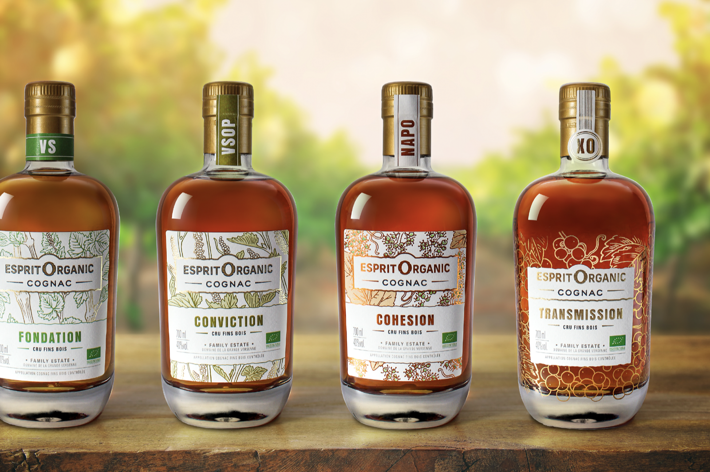
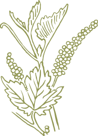
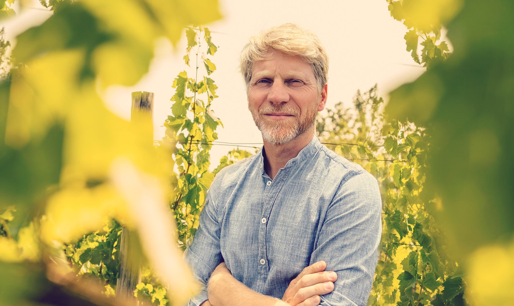

Cognac Esprit Organic
Cognac Esprit Organic
Family, natural and premium organic Cognac.
Family, natural and premium organic Cognac.

All the nature of our CognacsAll the nature of our CognacsOrganic and uncomplicatedOrganic and uncomplicated Pair our CognacsPair our CognacsLet inspiration flowLet inspiration flow
Pair our CognacsPair our CognacsLet inspiration flowLet inspiration flow


Welcome to our land
Welcome to our land
••• For 20 years, Léopold Croizet has managed his vineyard organically. He distils, ages and bottles production at the estate. For 20 years, Léopold Croizet has been managing his vineyard in organic agriculture. He distils, ages and bottles production at the estate. The teamThe team The natural cycleThe natural cycleWorking sustainablyWorking sustainably
The natural cycleThe natural cycleWorking sustainablyWorking sustainably

The Organic spiritThe organic spiritOur storyOur storyMastering & letting nature work
Mastering & letting nature work
Working in the right direction
Working in the right direction
Cultivating to transmit
Cultivating to transmit
•••ESPRIT ORGANIC
was born from a desire
to transmit, carried by
Léopold et Fanny Croizet
with all their heart,
energy
and passion.
ESPRIT ORGANIC
was born from a desire
to transmit, carried by
Léopold and Fanny Croizet
with all their heart,
energy
and passion.